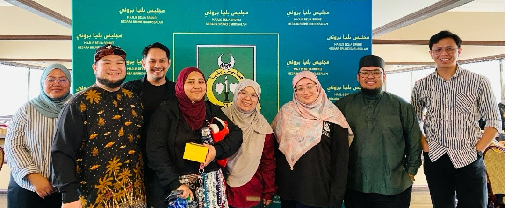
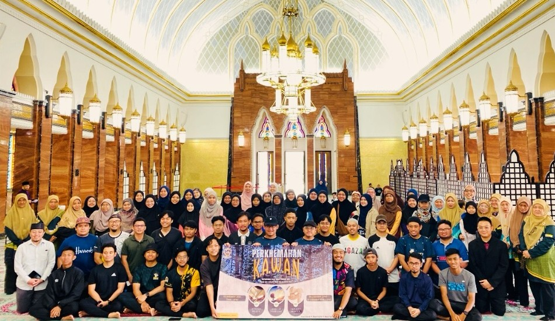

Personal Program PhotosKESAN Leadership Foundation Camp
An intensive residential program introducing youth to structured leadership fundamentals and personal development.
Press Release Highlights
The Leadership Foundation Camp brought together 48 youth from across Brunei for three days of intensive mentoring, self-discovery activities, and leadership workshops.
- Participants from 6 secondary schools
- Facilitated by 12 trained KESAN mentors
- Endorsed by Ministry of Education Brunei

Team Program PhotosYouth Leaders Assembly
A collaborative gathering of student leaders developing team leadership through structured group challenges and mentored reflection.
Press Release Highlights
The Assembly convened student leaders from universities and colleges across Brunei, creating a platform for peer learning and collaborative leadership development.
- Participants from UBD, UNISSA, and ITB
- Included team leadership simulation exercises
- Partnered with Brunei National Youth Council
 Community
Program Photos
Community
Program Photos
Community Impact Initiative
A semester-long program where mentees design and execute real community projects under KESAN mentor supervision.
Press Release Highlights
36 youth leaders planned and executed five community engagement projects across three districts of Brunei — from youth literacy campaigns to environmental initiatives.
- 5 community projects delivered
- Reached over 800 community members
- Featured in Media Permata coverage
 Personal
Program Photos
Personal
Program Photos
Mentoring Skills Workshop Series
A workshop series equipping advanced mentees with the skills to become effective peer mentors themselves.
Press Release Highlights
Senior KESAN mentees underwent four structured training sessions to develop their mentoring capabilities, coaching techniques, and reflective leadership practices.
- Graduated 24 trained youth mentors
- Mentors now active in 8 institutions
- In collaboration with UBD Faculty of Education